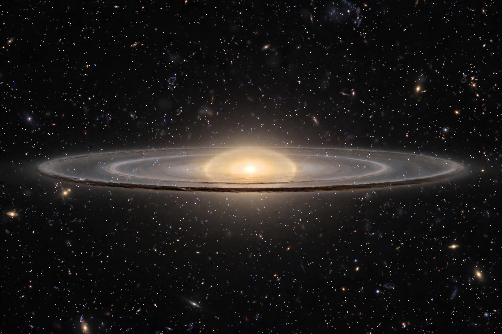

A lenticular galaxy (denoted S0) is a type of galaxy intermediate between an elliptical and a spiral galaxy in the Hubble sequence. It has a large-scale disc like a spiral but has used up or lost most of its interstellar matter, so it shows little ongoing star formation and no prominent spiral arms; it consists mainly of ageing stars, like an elliptical.
Lenticulars possess a bright central bulge and a smooth, featureless lens-shaped disc. Many have bars (classified SB0) and faint ring structures. Well-known examples include NGC 5866 (the Spindle Galaxy), the Cartwheel Galaxy (an S0 with a striking ring), and Centaurus A.
A leading theory holds that lenticulars are spiral galaxies whose gas was stripped — by ram pressure in clusters or by starvation — leaving a faded disc: they are especially common in galaxy clusters. Mergers may also build their bulges.